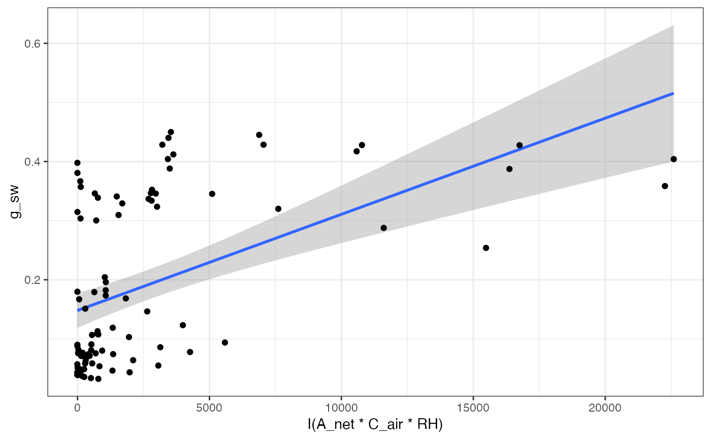
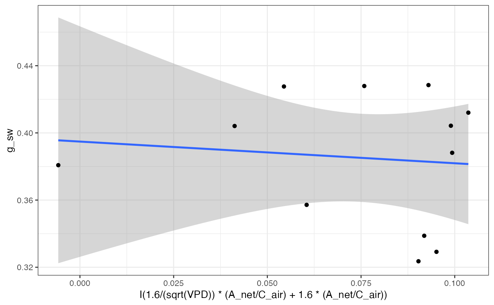
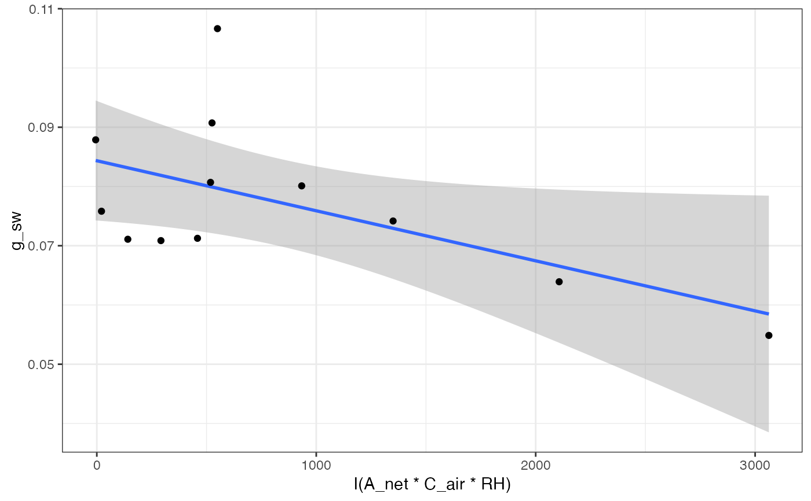

Fitting stomatal conductance models
Arguments
- data
Dataframe
- varnames
Variable names
For the Ball-Berry model: varnames = list(A_net = "A_net", C_air = "C_air", g_sw = "g_sw", RH = "RH") where A_net is net CO2 assimilation, C_air is CO2 concentration at the leaf surface in umol mol-1, g_sw is stomatal conductance to H2O, and RH is relative humidity as a proportion.
For the Leuning model: varnames = list(A_net = "A_net", C_air = "C_air", g_sw = "g_sw", VPD = "VPD") where A_net is net CO2 assimilation, C_air is CO2 concentration at the leaf surface in umol mol-1, g_sw is stomatal conductance to H2O, and VPD is leaf to air vapor pressure deficit in kPa.
For the Medlyn et al. 2011 models: varnames = list(A_net = "A_net", C_air = "C_air", g_sw = "g_sw", VPD = "VPD") where A_net is net CO2 assimilation, C_air is CO2 concentration at the leaf surface in umol mol-1, g_sw is stomatal conductance to H2O, and VPD is leaf to air vapor pressure deficit in kPa.
- model
Which model(s) to fit? Defaults to all models. Available options are "BallBerry", "Leuning", "Medlyn_partial", and "Medlyn_full", from Ball et al. (1987), Leuning (1995), and Medlyn et al. (2011).
- D0
Vapor pressure sensitivity of stomata (Leuning 1995)
- ...
Arguments to pass on to the nlsLM() function for the Medlyn models.
Value
fit_gs_model fits one or more stomatal conductance models to the data. The top level of the output list is named after the fitted model, while the second level contains the Model, Parameters, and Graph, in that order.
References
Ball JT, Woodrow IE, Berry JA. 1987. A model predicting stomatal conductance and its contribution to the control of photosynthesis under different environmental conditions, in Progress in Photosynthesis Research, Proceedings of the VII International Congress on Photosynthesis, vol. 4, edited by I. Biggins, pp. 221–224, Martinus Nijhoff, Dordrecht, Netherlands.
Leuning R. 1995. A critical appraisal of a coupled stomatal- photosynthesis model for C3 plants. Plant Cell Environ 18:339-357
Medlyn BE, Duursma RA, Eamus D, Ellsworth DS, Prentice IC, Barton CVM, Crous KY, Angelis PD, Freeman M, Wingate L. 2011. Reconciling the optimal and empirical approaches to modeling stomatal conductance. Glob Chang Biol 17:2134-2144
Examples
# \donttest{
# Read in your data
# Note that this data is coming from data supplied by the package
# hence the complicated argument in read.csv()
# This dataset is a CO2 by light response curve for a single sunflower
data <- read.csv(system.file("extdata", "A_Ci_Q_data_1.csv",
package = "photosynthesis"
))
# Convert RH to a proportion
data$RH <- data$RHcham / 100
# Fit stomatal conductance models
# Can specify a single model, or all as below
fits <- fit_gs_model(
data = data,
varnames = list(
A_net = "A",
C_air = "Ca",
g_sw = "gsw",
RH = "RH",
VPD = "VPDleaf"
),
model = c(
"BallBerry",
"Leuning",
"Medlyn_partial",
"Medlyn_full"
),
D0 = 3
)
# Look at BallBerry model summary:
summary(fits[["BallBerry"]][["Model"]])
#>
#> Call:
#> lm(formula = g_sw ~ gs_mod_ballberry(A_net = A_net, C_air = C_air,
#> RH = RH), data = data)
#>
#> Residuals:
#> Min 1Q Median 3Q Max
#> -0.1516 -0.1007 -0.0557 0.1372 0.2498
#>
#> Coefficients:
#> Estimate Std. Error
#> (Intercept) 1.481e-01 1.471e-02
#> gs_mod_ballberry(A_net = A_net, C_air = C_air, RH = RH) 1.627e-05 2.832e-06
#> t value Pr(>|t|)
#> (Intercept) 10.062 < 2e-16 ***
#> gs_mod_ballberry(A_net = A_net, C_air = C_air, RH = RH) 5.744 1.13e-07 ***
#> ---
#> Signif. codes: 0 ‘***’ 0.001 ‘**’ 0.01 ‘*’ 0.05 ‘.’ 0.1 ‘ ’ 1
#>
#> Residual standard error: 0.1248 on 94 degrees of freedom
#> Multiple R-squared: 0.2598, Adjusted R-squared: 0.2519
#> F-statistic: 32.99 on 1 and 94 DF, p-value: 1.132e-07
#>
# Look at BallBerry parameters
fits[["BallBerry"]][["Parameters"]]
#> g0 g1
#> 1 0.1480627 1.62664e-05
# Look at BallBerry plot
fits[["BallBerry"]][["Graph"]]

# Fit many g_sw models
# Set your grouping variable
# Here we are grouping by Qin and individual
data$Q_2 <- as.factor((round(data$Qin, digits = 0)))
fits <- fit_many(data,
varnames = list(
A_net = "A",
C_air = "Ca",
g_sw = "gsw",
RH = "RH",
VPD = "VPDleaf"
),
funct = fit_gs_model,
group = "Q_2"
)
#>
|
| | 0%Error in nlsModel(formula, mf, start, wts) :
#> singular gradient matrix at initial parameter estimates
#>
|
|========= | 12%
|
|================== | 25%
|
|========================== | 38%
|
|=================================== | 50%
|
|============================================ | 62%
|
|==================================================== | 75%
|
|============================================================= | 88%
|
|======================================================================| 100%
# Look at the Medlyn_partial outputs at 750 PAR
# Model summary
summary(fits[["750"]][["Medlyn_partial"]][["Model"]])
#>
#> Formula: g_sw ~ gs_mod_opti(A_net = A_net, C_air = C_air, VPD = VPD, g0,
#> g1)
#>
#> Parameters:
#> Estimate Std. Error t value Pr(>|t|)
#> g0 0.38778 0.03317 11.692 3.73e-07 ***
#> g1 -1.09754 0.83022 -1.322 0.216
#> ---
#> Signif. codes: 0 ‘***’ 0.001 ‘**’ 0.01 ‘*’ 0.05 ‘.’ 0.1 ‘ ’ 1
#>
#> Residual standard error: 0.04375 on 10 degrees of freedom
#>
#> Number of iterations to convergence: 2
#> Achieved convergence tolerance: 1.49e-08
#>
# Model parameters
fits[["750"]][["Medlyn_partial"]][["Parameters"]]
#> g0 g1
#> 1 0.3877773 -1.097544
# Graph
fits[["750"]][["Medlyn_partial"]][["Graph"]]

# Compile parameter outputs for BallBerry model
# Note that it's the first element for each PAR value
# First compile list of BallBerry fits
bbmods <- compile_data(
data = fits,
output_type = "list",
list_element = 1
)
# Now compile the parameters (2nd element) into a dataframe
bbpars <- compile_data(
data = bbmods,
output_type = "dataframe",
list_element = 2
)
# Convert group variable back to numeric
bbpars$ID <- as.numeric(bbpars$ID)
# Take quick look at light response of intercept parameters
plot(g0 ~ ID, bbpars)
# Compile graphs
graphs <- compile_data(
data = bbmods,
output_type = "list",
list_element = 3
)
# Look at 3rd graph
graphs[[3]]

# }